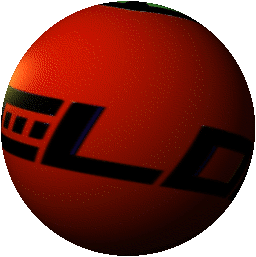
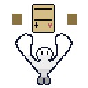

AppleLogic
There has been a ton of projects that DuelIx has worked on, but let's look at DuelIx Games's Origins Originally DuelIx Games was known as AppleLogic. A modding team for a game called Inscryption It was created on November 29th, 2021. Eventually, when Isaac D. and Isaac F. were both done with modding, they looked at a new horizon: making their own video games.
LogicPack (People Pack)
This was the first mod that Isaac F. and Isaac D. ever worked on. The idea was proposed by Isaac D. in an Inscryption modding server. The premise was simple: add People to the game. And that is exactly what Isaac F. did.